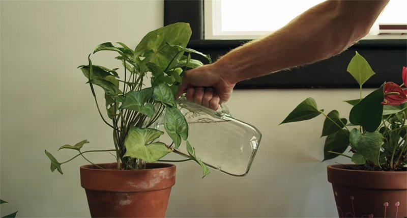
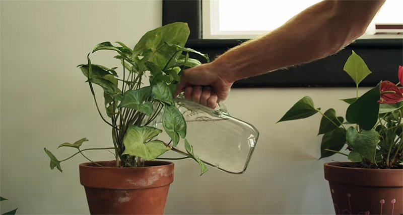
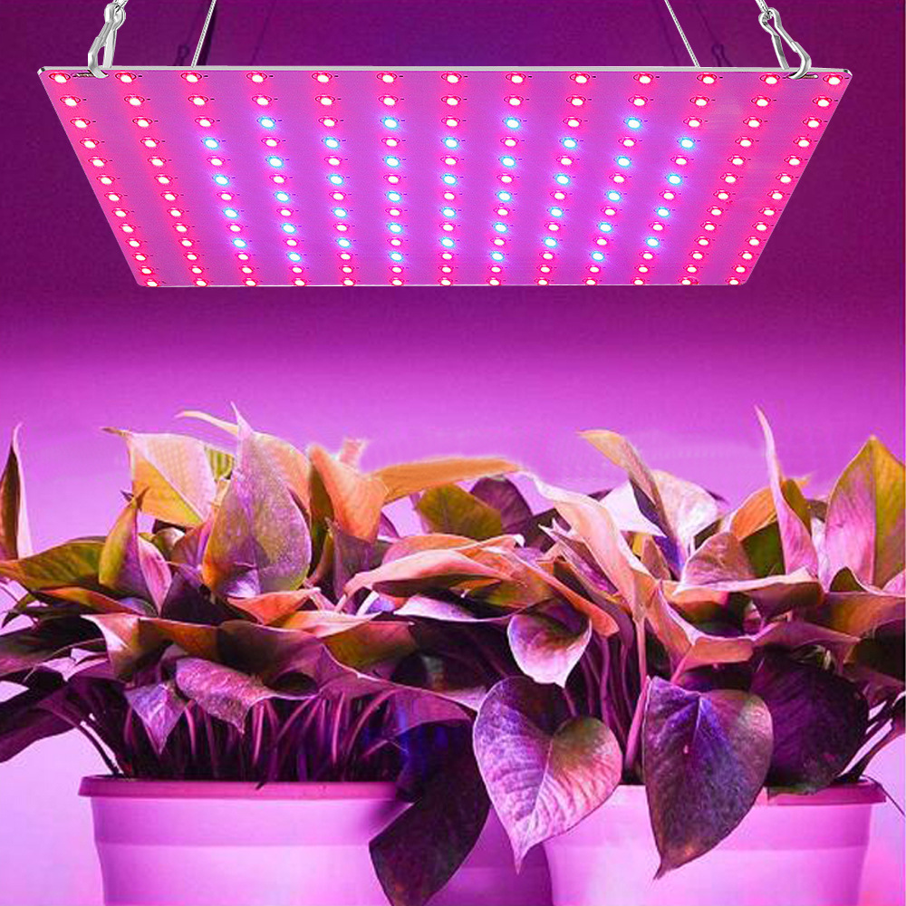
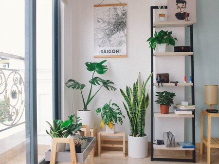
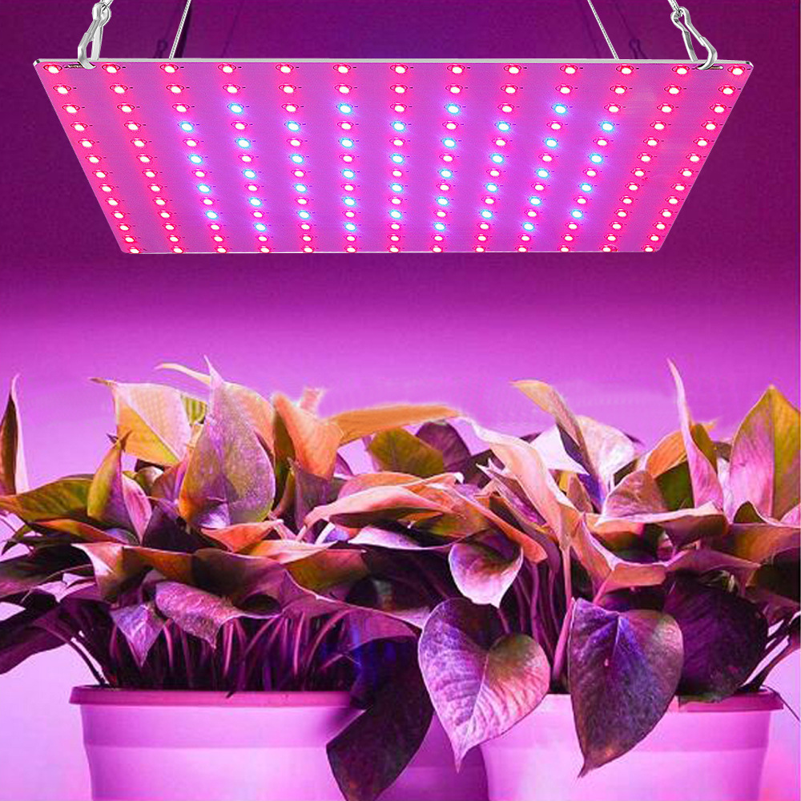
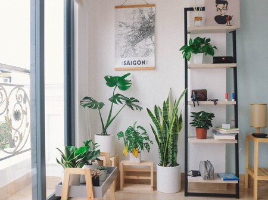

El Jardín del Botánico
Introducción
¡Bienvenido al Jardín del Botánico, un rincón especial para el cuidado de tus plantas de interior! Aquí encontrarás una amplia gama de información y consejos para mantener tus plantas vibrantes y exuberantes en el ambiente acogedor de tu hogar. Desde pequeñas macetas hasta jardines en interiores, nuestro objetivo es ayudarte a mantener tus plantas felices y saludables.
Nuestro equipo de expertos te brindará valiosos consejos sobre el riego adecuado, la exposición a la luz solar, los fertilizantes recomendados y muchos otros aspectos importantes para el bienestar de tus plantas de interior. Ya seas un amante de la jardinería o un principiante en el mundo de las plantas, estamos aquí para guiarte en cada paso del camino.
Explora nuestras secciones dedicadas al cuidado de plantas de interior y descubre cómo convertir tu hogar en un oasis verde. ¡Es hora de llenar tu espacio con la belleza y la vida de la naturaleza, y nosotros te acompañaremos en esta emocionante aventura botánica!
Cuidados Generales de Plantas
El cuidado apropiado de las plantas de interior es crucial para garantizar su vitalidad y esplendor. En este sentido, es fundamental seguir algunas pautas generales para mantener tus plantas en óptimas condiciones. En primer lugar, presta especial atención a la cantidad de agua que les proporcionas. Evita tanto el exceso como la falta de riego, ya que ambas situaciones pueden ser perjudiciales para su desarrollo. Asegúrate de que el sustrato se mantenga ligeramente húmedo pero no empapado.
Otro factor importante es la exposición a la luz solar. Aunque las plantas de interior pueden adaptarse a diferentes niveles de luz, es necesario conocer las preferencias específicas de cada especie. Algunas pueden prosperar con luz indirecta, mientras que otras requieren una exposición más directa al sol. Observa cómo reaccionan tus plantas y ajústales el lugar si notas signos de crecimiento deficiente o quemaduras por el sol.
Por último, no subestimes el papel de los fertilizantes en el cuidado de tus plantas de interior. Proporcionarles los nutrientes adecuados es esencial para su crecimiento y floración. Sin embargo, no exageres con la fertilización, ya que un exceso puede dañar las raíces. Sigue las recomendaciones del fabricante o, si prefieres una opción más natural, considera el uso de fertilizantes orgánicos. Con estos cuidados fundamentales, podrás disfrutar de plantas de interior vibrantes y exuberantes que realcen la belleza de tu hogar.
 

Cuidado de Riego
El riego adecuado es un factor crítico para garantizar la salud y bienestar de tus plantas de interior. En esta sección, te proporcionaremos valiosas pautas para determinar el momento y la cantidad de agua que necesitan tus plantas, evitando tanto el exceso como la escasez de riego, que podrían perjudicar su desarrollo y vitalidad.
Para determinar cuándo regar tus plantas, es esencial estar atento a las señales que nos brindan. Observa la superficie del sustrato y, cuando notes que está ligeramente seco al tacto, es un indicativo de que es hora de regar. Sin embargo, evita caer en el exceso de agua, ya que el encharcamiento puede provocar daños en las raíces y favorecer el crecimiento de hongos y enfermedades. Un drenaje adecuado en las macetas también es clave para evitar este problema.
En cuanto a la cantidad de agua, esta puede variar según la especie de planta y las condiciones ambientales. Algunas plantas pueden requerir un riego más frecuente que otras. Asegúrate de que el agua alcance toda la superficie de la tierra y permita que el exceso se drene adecuadamente. La mejor manera de determinar si tus plantas necesitan más agua es observar su respuesta: hojas marchitas o caídas pueden indicar falta de agua, mientras que hojas amarillentas o manchas pueden ser señales de exceso.
Cuidado de Abono
l abono desempeña un papel fundamental en el cuidado de las plantas de interior al proporcionarles nutrientes esenciales que mejoran su salud y desarrollo. En esta sección, exploraremos los diversos tipos de abonos disponibles y aprenderemos cómo aplicarlos adecuadamente para fomentar un crecimiento fuerte y saludable en nuestras queridas plantas.
Existen varias opciones de abonos, desde los fertilizantes químicos hasta los orgánicos, cada uno con sus ventajas y características específicas. Los fertilizantes químicos suelen ser rápidamente absorbidos por las plantas, ofreciendo un impulso rápido a su crecimiento. Por otro lado, los abonos orgánicos liberan gradualmente nutrientes en el sustrato, nutriendo las plantas de manera más sostenida. Es importante elegir el tipo de abono que mejor se adapte a nuestras preferencias y a las necesidades de las plantas que tenemos en casa.
La correcta aplicación del abono es igualmente crucial para maximizar sus beneficios. Es recomendable seguir las indicaciones del fabricante y no excederse en las cantidades, ya que un exceso de nutrientes puede dañar las raíces y afectar negativamente el crecimiento. También es esencial tener en cuenta la época del año y el ciclo de crecimiento de cada planta, ya que algunas especies pueden necesitar más abono durante su fase de crecimiento activo. Con el conocimiento adecuado sobre los diferentes tipos de abonos y su aplicación, podremos brindar a nuestras plantas de interior los nutrientes que necesitan para florecer en todo su esplendor.
Cuidado de Luz Solar o Artificial
El adecuado manejo de la luz es esencial para el desarrollo óptimo de las plantas de interior. En esta sección, te enseñaremos cómo identificar las necesidades de luz de tus plantas y cómo brindarles la cantidad adecuada de luz solar natural o artificial para mantenerlas florecientes y saludables.
Cada planta tiene requerimientos de luz específicos, por lo que es vital observarlas de cerca y entender sus preferencias. Algunas plantas prosperan en ambientes con luz indirecta y sombra parcial, mientras que otras necesitan una exposición más directa al sol. Observa cómo responden tus plantas a la luz disponible y ajústalas según sus necesidades. Puedes rotarlas para que todas reciban una distribución equitativa de luz.
Si la luz natural es limitada en tu hogar, las luces artificiales pueden ser una excelente opción para complementarla. Las bombillas LED especiales para el crecimiento de las plantas ofrecen una gama de espectros adecuados para su fotosíntesis. Coloca estas luces a una distancia apropiada de las plantas y asegúrate de proporcionarles un período adecuado de oscuridad durante la noche para su descanso.
 


